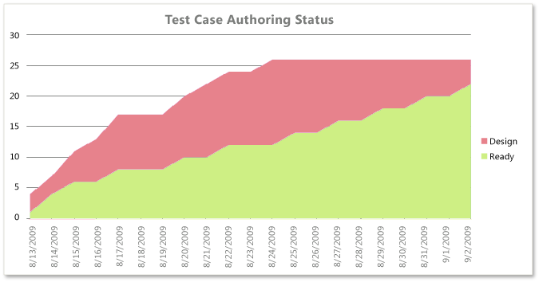
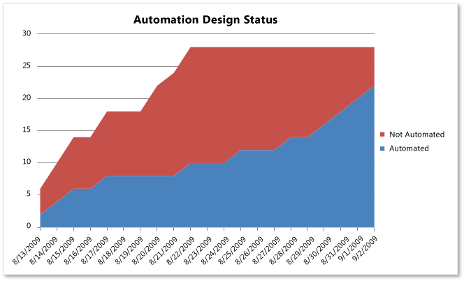
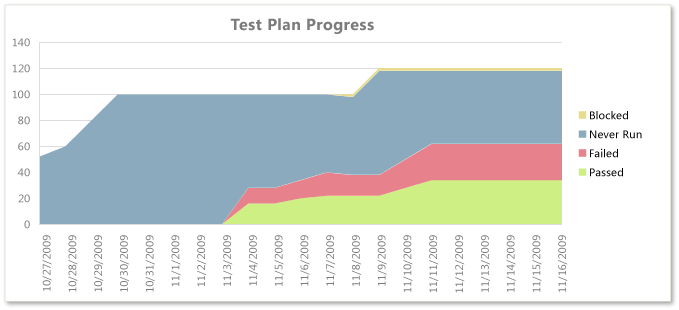
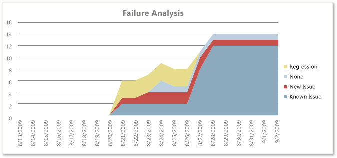

Teams who are responsible for testing software can use the Test Team Progress report to help monitor test activities and report on the progress of the team in authoring and automating tests and performing regression testing. The Test Team Progress report provides the following six reports based on data that was collected for test cases that were defined for the team project and test results:
-
Test Plan Progress: Helps the team determine how much testing the team has completed and whether it is likely to finish test activities on time.
-
Test Case Authoring Status: Helps the team track the status of completing the definition of test cases so that they can be run.
-
Test Status by Suite: Helps the team determine how much testing the team has completed within each test suite.
-
Test Status by Area: Helps the team determine how much testing the team has completed within each product area.
-
Failure Analysis: Helps the team monitor how many regressions they are finding.
-
Automation Design Status: Supports the team in tracking the number of test cases that still must be automated.
This Test Team Progress report is available only when the team creates test plans and starts to run tests by using Microsoft Test Manager. For more information, see Testing the Application.
|
|
|---|
|
You can access the Test Team Progress report from the Test Team Management folder that is located under the Excel Reports folder for the team project in Team Explorer. You can access this folder only if your team project portal has been enabled and is provisioned to use SharePoint Products. For more information, see Access a Team Project Portal and Process Guidance. |
|
In this topic |
Related topics |
Required Permissions
To view the report, you must be assigned or belong to a group that has been assigned the Read permissions in SharePoint Products for the team project.
To modify or customize the report, you must be a member of the TfsWarehouseDataReaders security role in SQL Server Analysis Services. You must also be assigned or belong to a group that has been assigned the Members permissions in SharePoint Products for the team project. For more information, see Grant Access to the Databases of the Data Warehouse for Visual Studio ALM and Managing Permissions.
 Data
in the Reports
Data
in the Reports
The Test Team Project report presents data that is based on PivotTable reports that access data stored in the data warehouse. The data is derived from the results that are generated when members of the team define test cases and run tests by using Microsoft Test Manager. For more information, see Running Tests and Reviewing Test Results.
Test Case Authoring and Automation Design Status
The team can use the Test Case Authoring Status report to help monitor the progress that they make toward defining and designing test cases. This report shows a burndown chart of how many test cases were in the design and ready states for the most recent six weeks.
The team can use the Automation Design Status report to help monitor the progress that they make toward automating test cases. This report shows a burndown chart of how many test cases have moved into an automated state for the most recent six weeks.
The following table describes the report filters and fields that are used in the PivotTable reports that generate the Test Case Authoring Status and Automation Design Status reports.
|
Filters |
Fields |
|---|---|
|
Field specific to the Test Case Authoring Status report :
Field specific to the Automation Design Status report:
|
Test Plan Progress
The Test Plan Progress report provides a stacked area graph of the test results from all test cases. The report groups the test results into their most recently recorded outcome and plots the data for the most recent four weeks. Outcomes include Never Run, Blocked, Failed , or Passed.
The team can review this report to determine the progress in a sprint or iteration or over time. For example, the team can answer these questions:
-
How much testing has the team completed?
-
Is the team likely to finish the testing on time?
-
How many tests are left to be run?
-
How many tests are passing?
-
How many tests are failing?
-
How many tests are blocked?
Test Results by Test Suite or Product Area
The Test Status by Suite and Test Status by Area reports list the count of all test results that were collected for all test cases that were based on recorded outcomes. The reports group the test results either by test suite or product area. The outcomes for test results include Never Run, Blocked , Failed, or Passed.
The team can use these reports to investigate test suites or product areas whose test results have high failure counts or test cases that have never run.
Regression Testing
The test team can use the Failure Analysis report to help monitor how many regressions the test team finds. Regressions are bugs in the software that you test that did not appear in previous versions. A team that performs regression testing is specifically focused on finding bugs that have appeared only in a new version of the software.
The Failure Analysis report provides a stacked area graph that shows the cumulative count of all failed outcome test results. The report groups the results by failure type for all test cases and test configurations and plots the results for the most recent six weeks. Failure types include Regression, None, New Issue, and Known Issue.
The system examines each test configuration for which the test case was executed and tries to identify the predecessor result for the same configuration for the test case. The failure type that is assigned to the test case/configuration is determined based on the following criteria:
-
Regression: When the immediate predecessor result had an outcome of Passed.
-
None: When the immediate predecessor result had an outcome that was not Passed or Failed.
-
New Issue: When no immediate predecessor result can be found.
-
Known Issue: When the immediate predecessor result had an outcome of Failed.
The team can review the report to find answers to the following questions:
-
How many tests overall are regressing?
-
Is the team keeping the overall number of regressions or test failures within expected ranges or team goals?
-
Is the team addressing issues as they are identified? Are the known issues addressed in a timely manner?
A healthy Failure Analysis report will show moderate numbers of new issues, known issues, and regressions. If spikes occur in one or more of these areas, the team might want to investigate this issue more. Spikes may indicate problems in either the test activity or the quality of code that the team checks in. Also, the team might want to check the status of recent builds, bug status, and code churn to determine whether the metrics for each of these factors can help explain the changes in the test activity lines.
Report Filters and Fields
The following table describes the report filters and fields that are used in the PivotTables that generate the Test Plan Progress, Test Status by Suite or Area, and the Failure Analysis reports.
|
Filters |
Fields |
|---|---|
Filters specific to the Test Plan Progress report:
Filter specific to the Test Status by Suite report:
Filters specific to the Failure Analysis report:
|
Field specific to the Test Plan Progress report:
Field specific to the Test Status by Suite report:
Field specific to the Test Status by Area report:
Fields specific to the Failure Analysis report:
|
Required
Activities for Monitoring Test Team Progress
For the Test Team Progress reports to be useful and accurate, the team must perform the following activities:
-
Define test cases and test plans, and assign test cases to the test plans. For more information, see Defining Your Testing Effort Using Test Plans.
-
Run tests. For more information, see Running Tests.
-
For manual tests, mark the results of each validation step in the test case as passed or failed.
 Important
Important
Testers must mark a test step with a status if it is a validation test step. The overall result for a test case reflects the status of all the test steps that the tester marked. Therefore, the test case will have a status of failed if the tester marked any test step as failed or not marked.
For automated tests, each test case is automatically marked as passed or failed.
-
(Optional) To filter the reports by product area and iteration, specify the Area and Iteration paths of each test case.
For the Testing Gaps reports to be useful and accurate, the team must perform the activities that are described in the following table:
|
Worksheet report |
Required activities |
|---|---|
|
|
|
|
|
|
|
|
Updating
and Customizing the Reports
You can update the Test Team Progress report by opening it in Office Excel and changing the filter options for the Pivot-Table report for one of the worksheets. You can customize each report to support other views, as the following table describes.
|
View |
Action |
|---|---|
|
Change the filter for Iteration(default=All) |
|
Change the filter for Area(default=All) |
|
Change the filter for Test Plan(default=All) |
|
In the Columns PivotTable Field List, replace @@Last 6 weeks@@with a different Set |
For more information about how to work with and customize PivotTable and PivotChart reports, see the following pages on the Microsoft Web site: